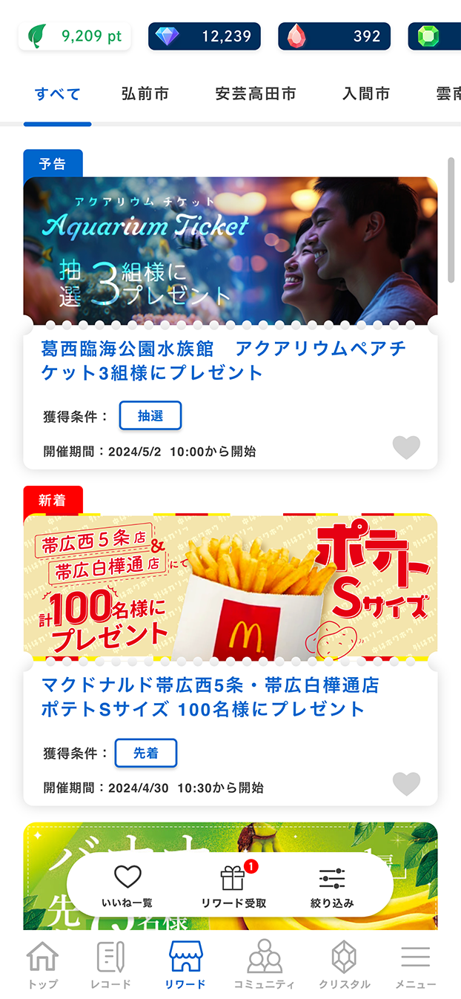

Before

After
SPOBY リワード一覧画面
制作背景・意図
- 【概要】
-
- 役割 : ユーザーが「どのコミュニティで」「どの条件のリワードを」詳細画面へ遷移する前に取捨選択できるようにする役割を担う画面です。
- 掲載場所 : SPOBYアプリ内 リワード一覧画面
- アプリ（SPOBY）について :
「SPOBY」は人の活動による脱炭素・健康増進を実現するアプリです。ユーザーはアプリを利用して活動を行うことでポイントを獲得でき、貯まったポイントはアプリ内に掲載されている様々なリワードと頑張ったご褒美として交換・獲得することができます。
- 【制作目的】
-
- 複数コミュニティに参加しているユーザーが多いという前提のもと、リワード一覧画面において、「自治体・企業といったコミュニティ単位」「「先着」「抽選」「女性限定」などの獲得条件」を軸に、リワードを直感的に判別・絞り込みできる状態をつくることを目的として制作しました。
これにより、ユーザーがリワード詳細画面へ遷移して確認する手間を減らし、自分の条件に合ったリワードへスムーズに辿り着ける体験を実現することを狙っています。
- 複数コミュニティに参加しているユーザーが多いという前提のもと、リワード一覧画面において、「自治体・企業といったコミュニティ単位」「「先着」「抽選」「女性限定」などの獲得条件」を軸に、リワードを直感的に判別・絞り込みできる状態をつくることを目的として制作しました。
- 【背景/課題】
-
-
複数の自治体・企業コミュニティに参加しているユーザーが多い一方で、従来のリワード一覧画面では、「どのコミュニティに紐づくリワードなのか」を視覚的に判断することができませんでした。そのため、一覧画面上では、自身が居住している自治体コミュニティのリワードなのか、あるいは勤務先コミュニティのリワードなのかが分からず、ユーザーは毎回リワード詳細画面へ遷移して確認する必要がありました。このような操作が繰り返されることで、
リワード探索時の手間やストレスが発生している状況でした。また、リワードには「先着」「抽選」「女性限定」など、獲得条件の種類も多く存在していましたが、一覧画面ではそれらを判別・絞り込みすることができず、ユーザーが自分の条件に合ったリワードを探しづらいという課題もありました。
これらの背景から、リワード一覧画面の段階で、コミュニティ単位および獲得条件ごとにリワードをフィルタリングできる仕組みが必要とされていました。
-
複数の自治体・企業コミュニティに参加しているユーザーが多い一方で、従来のリワード一覧画面では、「どのコミュニティに紐づくリワードなのか」を視覚的に判断することができませんでした。そのため、一覧画面上では、自身が居住している自治体コミュニティのリワードなのか、あるいは勤務先コミュニティのリワードなのかが分からず、ユーザーは毎回リワード詳細画面へ遷移して確認する必要がありました。このような操作が繰り返されることで、
リワード探索時の手間やストレスが発生している状況でした。また、リワードには「先着」「抽選」「女性限定」など、獲得条件の種類も多く存在していましたが、一覧画面ではそれらを判別・絞り込みすることができず、ユーザーが自分の条件に合ったリワードを探しづらいという課題もありました。
- 【制作時に重視したポイント】
-
- 一覧画面の時点で判断できる情報設計
詳細画面に遷移しなくても、「自分に関係のあるリワードかどうか」を判断できる構造を重視しました。 - ユーザーの利用文脈に沿ったフィルタリング軸
コミュニティ単位・獲得条件といった、実際のリワード探索時に使われる判断軸を基にフィルタリング機能を設計しています。 - 今後の拡張を考慮した構造
コミュニティ数やリワード数が増えた場合でも、一覧性や視認性が損なわれない設計を重視しています。
- 一覧画面の時点で判断できる情報設計